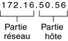
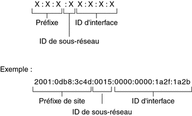

Adresse IP
Prérequis : Binaire <> Décimal
Base 10 : Décimal : 0, 1, 2, 3, 4, 5, 6, 7, 8, 9
Base 2 : Binaire : 0, 1
Base 16 : Hexadécimal : 0, 1, 2, 3, 4, 5, 6, 7, 8, 9, A, B, C, D, E, F
| Base 10 | Base 2 | Base 16 |
|---|---|---|
| 0 | 0000 | 0 |
| 1 | 0001 | 1 |
| 2 | 0010 | 2 |
| 3 | 0011 | 3 |
| 4 | 0100 | 4 |
| 5 | 0101 | 5 |
| 6 | 0110 | 6 |
| 7 | 0111 | 7 |
| 8 | 1000 | 8 |
| 9 | 1001 | 9 |
| 10 | 1010 | A |
| 11 | 1011 | B |
| 12 | 1100 | C |
| 13 | 1101 | D |
| 14 | 1110 | E |
| 15 | 1111 | F |
En base 10 :
| 103 | 102 | 101 | 100 |
|---|---|---|---|
| 1000 | 100 | 10 | 1 |
Le nombre 4321 peut être décomposé :
4.103 + 3.102 + 2.101 + 1.100
41000 + 3100 + 210 + 11
4321
Un nombre en décimal sera écrit avec l'indice 10 :
432110
En base 2 :
| 27 | 26 | 25 | 24 | 23 | 22 | 21 | 20 |
|---|---|---|---|---|---|---|---|
| 128 | 64 | 32 | 16 | 8 | 4 | 2 | 1 |
Le nombre 24910 peut être converti en bianire par soustraction successive :
| 27 | 26 | 25 | 24 | 23 | 22 | 21 | 20 | |
|---|---|---|---|---|---|---|---|---|
| 128 | 64 | 32 | 16 | 8 | 4 | 2 | 1 | |
| 24910 |
On se pose la question est-ce que 128 (27) rentre dans 249
si faux : 0
si vrai : 1 et on soustrait 128 à 249
Ici c'est vrai on met 1 et on soustrait 128 à 249 soit 121
| 27 | 26 | 25 | 24 | 23 | 22 | 21 | 20 | |
|---|---|---|---|---|---|---|---|---|
| 128 | 64 | 32 | 16 | 8 | 4 | 2 | 1 | |
| 24910 | 1 | x |
On se pose la question est-ce que 64 (26) rentre dans 121
si faux : 0
si vrai : 1 et on soustrait 64 à 121
Ici c'est vrai on met 1 et on soustrait 64 à 121 soit 57
| 27 | 26 | 25 | 24 | 23 | 22 | 21 | 20 | |
|---|---|---|---|---|---|---|---|---|
| 128 | 64 | 32 | 16 | 8 | 4 | 2 | 1 | |
| 24910 | 1 | 1 | x |
On se pose la question est-ce que 32 (25) rentre dans 57
si faux : 0
si vrai : 1 et on soustrait 32 à 57
Ici c'est vrai on met 1 et on soustrait 32 à 57 soit 25
| 27 | 26 | 25 | 24 | 23 | 22 | 21 | 20 | |
|---|---|---|---|---|---|---|---|---|
| 128 | 64 | 32 | 16 | 8 | 4 | 2 | 1 | |
| 24910 | 1 | 1 | 1 | x |
On se pose la question est-ce que 16 (24) rentre dans 25
si faux : 0
si vrai : 1 et on soustrait 16 à 25
Ici c'est vrai on met 1 et on soustrait 16 à 25 soit 9
| 27 | 26 | 25 | 24 | 23 | 22 | 21 | 20 | |
|---|---|---|---|---|---|---|---|---|
| 128 | 64 | 32 | 16 | 8 | 4 | 2 | 1 | |
| 24910 | 1 | 1 | 1 | 1 | x |
On se pose la question est-ce que 8 (23) rentre dans 9
si faux : 0
si vrai : 1 et on soustrait 8 à 9
Ici c'est vrai on met 1 et on soustrait 8 à 9 soit 1
| 27 | 26 | 25 | 24 | 23 | 22 | 21 | 20 | |
|---|---|---|---|---|---|---|---|---|
| 128 | 64 | 32 | 16 | 8 | 4 | 2 | 1 | |
| 24910 | 1 | 1 | 1 | 1 | 1 | x |
On se pose la question est-ce que 4 (22) rentre dans 1
si faux : 0
si vrai : 1 et on soustrait 4
Ici c'est faux on met 0
| 27 | 26 | 25 | 24 | 23 | 22 | 21 | 20 | |
|---|---|---|---|---|---|---|---|---|
| 128 | 64 | 32 | 16 | 8 | 4 | 2 | 1 | |
| 24910 | 1 | 1 | 1 | 1 | 1 | 0 | x |
On se pose la question est-ce que 2 (21) rentre dans 1
si faux : 0
si vrai : 1 et on soustrait 2
Ici c'est faux on met 0
| 27 | 26 | 25 | 24 | 23 | 22 | 21 | 20 | |
|---|---|---|---|---|---|---|---|---|
| 128 | 64 | 32 | 16 | 8 | 4 | 2 | 1 | |
| 24910 | 1 | 1 | 1 | 1 | 1 | 0 | 0 | x |
On se pose la question est-ce que 1 (20) rentre dans 1
si faux : 0
si vrai : 1 et on soustrait 1
Ici c'est vrai on met 1 et on soustrait 1 à 1 soit 0
Puisque le reste = 0 notre conversion est finie
| 27 | 26 | 25 | 24 | 23 | 22 | 21 | 20 | |
|---|---|---|---|---|---|---|---|---|
| 128 | 64 | 32 | 16 | 8 | 4 | 2 | 1 | |
| 24910 | 1 | 1 | 1 | 1 | 1 | 0 | 0 | 1 |
Le nombre 249 peut être décomposé :
1.27 + 1.26 + 1.25 + 1.24 + 1.23 + 0.22 + 0.21 + 1.20
1x128 + 1x64 + 1x32 + 1x16 + 1x8 + 0x4 + 0x2 + 1x1
249
Un nombre en binaire sera écrit avec l'indice 2 :
1111 10012 = 24910
Exercices d'entrainement
question("What number is the letter A in the English alphabet?",
answer("8"),
answer("14"),
answer("1", correct = TRUE),
answer("23")
)
Adresse IPv4
Une adresse IPv4 est un nombre de 32 bits identifiant de manière unique une interface réseau sur un système.
Une adresse IPv4 s'écrit sous forme de nombres décimaux, divisés en quatre champs de 8 bits séparés par des points. Chaque champ de 8 bits représente un octet de l'adresse IPv4.
Cette forme de représentation des octets d'une adresse IPv4 est appelée format décimal avec points.
La figure ci-dessous présente les composants d'une adresse IPv4 172.16.50.56.

Pour calculer la partie réseau et partie machine, une adresse IP à besoin d'un masque de sous réseau.
Soit en décimal avec points : 255.255.0.0
Soit sous forme CIDR, préfixe de réseau : /16
Plages d'adresses privés IPv4
10.0.0.0 - 10.255.255.255
172.16.0.0 - 172.31.255.255
192.168.0.0 - 192.168.255.255
Adresse IPv6
Une adresse IPv6 est longue de 128 bits et se compose de huit champs de 16 bits, chacun étant délimité par deux-points (:). Chaque champ doit contenir un nombre hexadécimal, à la différence de la notation en format décimal avec points des adresses IPv4.
Format d'adresse IPv6 de base

Calcul de l'adresse réseau IPv4
Exemple : Nous cherchons l’adresse réseau de cette adresse IP : 10.5.100.16 / 20
Etape 1 : On écrit le masque en décimal pointé
/20 = en binaire 1111 1111 . 1111 1111 . 1111 0000 . 0000 0000 soit 255.255.240.0
Etape 2 : On réalise l’opération ET bit à bit entre l’adresse réseau et le masque, où le masque est différent de 0 ou 255.
Si 0, le résultat = 0
Si 255, le résultat = le nombre de l’adresse réseau
Si autre opération ET bit à bit
| Addresse IP | 10 | 5 | 100 | 16 |
| Adresse IP en binaire | ... | ... | 0110 0100 | ... |
| Masque en décimal | 255 | 255 | 240 | 0 |
| Masque en bianire | 1111 1111 | 1111 1111 | 1111 0000 | 0000 0000 |
| Adresse réseau en binaire | ... | ... | 0110 0000 | ... |
| Adresse réseau en décimale | 10 | 5 | 96 | 0 |
| Binaire | Décimal |
|---|---|
| 1111 1111 | 255 |
| 1111 1110 | 254 |
| 1111 1100 | 252 |
| 1111 1000 | 248 |
| 1111 0000 | 240 |
| 1110 0000 | 224 |
| 1100 0000 | 192 |
| 1000 0000 | 128 |
Calcul du nombre d'adresse disponible sur le réseau
Nombre de machine sur notre réseau :
2(Nombre “1” dans le masque inversé) - 2
0.0.15.255 = 00000000.00000000.00001111.11111111 soit 12 “1”
212 - 2 soit 4094 machines
ou
2(32 - préfixe) - 2
32 - préfixe = 32 – 20 = 12
212 - 2 soit 4094 machines
Calcul des adresses utiles sur le réseau
-
Adresse Réseau = Adresse IP && Masque
-
1er Adresse = Adresse Réseau + 1
-
Masque inversé = M̃ = 255.255.255.255 - Masque
-
Adresse de diffusion = Adresse Réseau + Masque inversé
-
Dernière Adresse = Adresse de Diffusion – 1
Exemple
Nous avons l'adresse IP : 192.168.4.201 / 27
Calcul du masque réseau
/27 = 1111 1111 . 1111 1111 . 1111 1111 . 1110 0000 = 255.255.255.224
Calcul de l'adresse réseau
| IP10 | 192 | 168 | 4 | 201 |
| Masque10 | 255 | 255 | 255 | 224 |
| IP2 | ... | ... | ... | 1100 1001 |
| Masque2 | ... | ... | ... | 1110 0000 |
| Réseau2 | ... | ... | ... | 1100 0000 |
| Réseau10 | 192 | 168 | 4 | 192 |
Adresse réseau : 192.168.4.192
Calcul de la 1ere adresse attribuable
1ere adresse attribuable = Adresse réseau + 1
1ere adresse attribuable = 192.168.4.193
Calcul du masque inversé
Masque inversé = M̃ = 255.255.255.255 - Masque
Masque inversé = M̃ = 255-255 . 255-255 . 255-255 . 255-224
Masque inversé = M̃ = 0 . 0 . 0 . 31
Calcul de l'adresse de diffusion
Adresse de diffusion = Adresse Réseau + Masque inversé
Adresse de diffusion = 192.168.4.192 + 0.0.0.31
Adresse de diffusion = 192.168.4.223
Calcul de la dernière adresse attribuable
Dernière Adresse = Adresse de Diffusion – 1
Dernière Adresse = 192.168.4.223 - 1
Dernière Adresse = 192.168.4.222
QCM : Calcul d'Adresses IP
Instructions
Pour chaque question, choisissez la réponse correcte.
Questions
-
Quelle est la première adresse utilisable dans un réseau 192.168.1.0/24 ?
- a) 192.168.1.0
- b) 192.168.1.1
- c) 192.168.1.254
- d) 192.168.1.255
-
Quelle est la dernière adresse utilisable dans un réseau 10.0.0.0/8 ?
- a) 10.0.0.0
- b) 10.0.0.1
- c) 10.255.255.254
- d) 10.255.255.255
-
Dans un réseau 172.16.0.0/20, combien d'hôtes peut-on avoir au maximum par sous-réseau ?
- a) 1022
- b) 4094
- c) 16382
- d) 65534
-
**Quel est le masque de sous-réseau correspondant à un réseau avec 6 bits pour les hôtes (/26) ? **
- a) 255.255.255.128
- b) 255.255.255.192
- c) 255.255.255.224
- d) 255.255.255.240
-
Si on a une adresse IP 172.16.32.10 et un masque de sous-réseau 255.255.240.0, à quel réseau appartient cette adresse ?
- a) 172.16.0.0
- b) 172.16.16.0
- c) 172.16.32.0
- d) 172.16.64.0
-
Quelle est l'adresse de broadcast d'un réseau 192.168.2.0/25 ?
- a) 192.168.2.127
- b) 192.168.2.128
- c) 192.168.2.254
- d) 192.168.2.255
-
Un masque de sous-réseau /21 permet d'avoir combien de bits pour l'hôte ?
- a) 1022
- b) 1024
- c) 2048
- d) 2046
-
Quelle est la différence entre une adresse réseau et une adresse hôte ?
- a) Il n'y a pas de différence.
- b) L'adresse réseau identifie le réseau, tandis que l'adresse hôte identifie un appareil sur ce réseau.
- c) L'adresse hôte identifie le réseau, tandis que l'adresse réseau identifie un appareil sur ce réseau.
- d) Aucune des réponses ci-dessus.
-
Pourquoi utilise-t-on des sous-réseaux ?
- a) Pour augmenter le nombre d'adresses IP disponibles.
- b) Pour diviser un grand réseau en plusieurs petits réseaux.
- c) Pour améliorer la sécurité du réseau.
- d) Toutes les réponses ci-dessus.
-
Quel est le rôle d'un masque de sous-réseau ?
- a) Identifier l'ordinateur dans un réseau.
- b) Délimiter la taille du réseau et des hôtes.
- c) Assigner une adresse IP à un périphérique.
- d) Router les paquets entre les réseaux.
Réponses
- b
- c
- b
- b
- c
- a
- d
- b
- d
- b